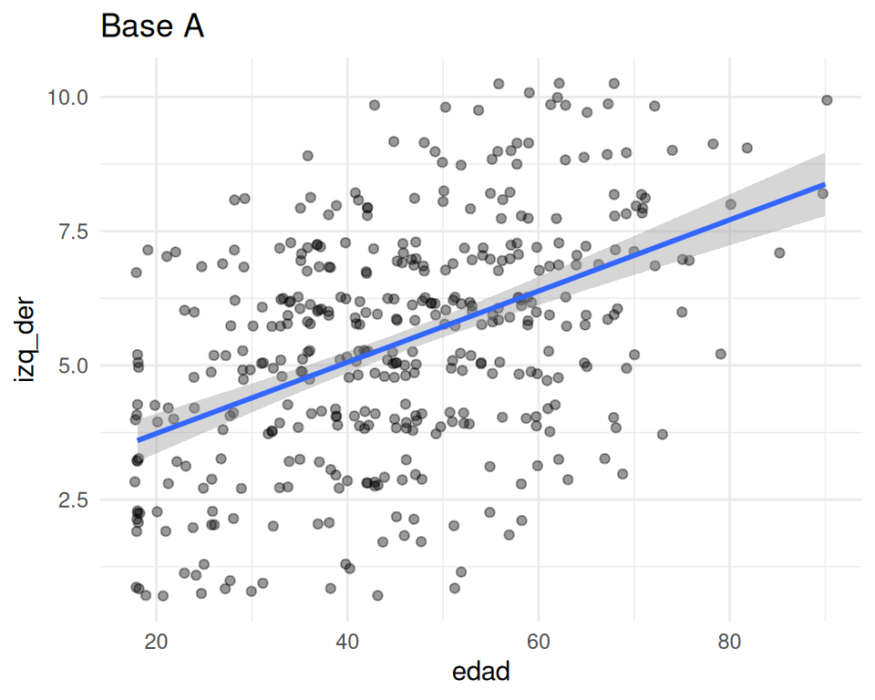
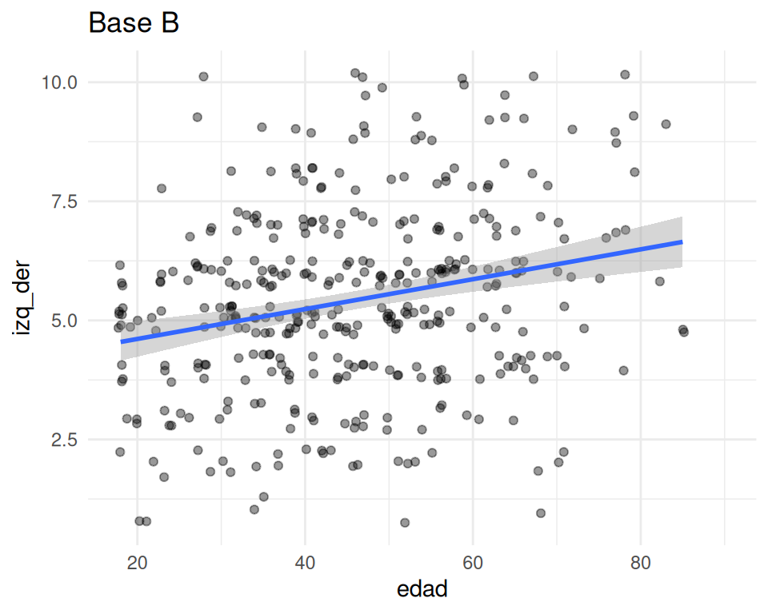

pacman::p_load(dplyr, sjPlot, psych, ggplot2)
datos <- read.csv("https://correlacional.metodos-facso.org/files/data/prueba2/base_A.csv") # o base_B.csv
datos_cor <- datos |> select(izq_der, edad, sexo)Prueba 2: Correlación y Chi² - Pauta
Pauta de corrección. Bases: base_A.csv (RUT par) y base_B.csv (RUT impar), generadas con simular_datos.R. Los resultados de cada versión se calculan a partir de las bases y se muestran lado a lado.
Instrucciones generales
- Esta prueba se contesta en este formulario de manera individual y presencial en la sala, ya sea con su computador personal o alguno de la sala de computación.
- Tiene dos partes: una relacionada con correlaciones y otra con Chi².
- Las preguntas se responden en este formulario, donde también se debe pegar el código correspondiente a cada pregunta.
- A modo de respaldo (por posibles fallas de UCursos), se sugiere responder las preguntas en un documento aparte (ej, en un word local), y luego cortar y pegar las respuestas en este mismo formulario. Guardar el documento como respaldo personal.
- Se estima que cada pregunta no debería tomar más de 30 minutos, por lo que la prueba está pensada para poder ser contestada en alrededor de una hora. De todas maneras, se dispondrá de 90 minutos máximo para responder.
- En caso de preguntas, se levanta la mano y alguien del equipo docente se acercará.
- No se permite salir de la sala; en caso excepcional o emergencia se autorizará la salida en compañía de un/a ayudante.
- Se permite usar recursos web, no plataformas de comunicación ni inteligencia artificial.
Enunciado
Un centro de estudios aplicó una encuesta a 500 personas para analizar la relación entre orientación política (izquierda-derecha) y características sociodemográficas. La base contiene las siguientes variables:
id: identificador único de la encuesta.izq_der: autoubicación en la escala izquierda-derecha, de 1 (izquierda) a 10 (derecha).edad: edad en años.sexo: sexo de la persona (0 = Hombre, 1 = Mujer).clase: clase social subjetiva (1 = Baja, 2 = Media, 3 = Alta).
La base de datos se encuentra disponible en el link escrito en la pizarra (existen dos bases, A y B: RUT terminado en número par responde con la base A y RUT impar con la base B).
Pregunta 1: ¿Cómo se relacionan la orientación política, la edad y el sexo?
1.1 Calcule el número de casos perdidos por pares de variables. En base a ello, decida si utilizará eliminación por lista (listwise) o por pares (pairwise) para estimar la matriz de correlaciones, y justifique su decisión. (1 pt)
colSums(is.na(datos_cor)) # perdidos por variable
sum(complete.cases(datos_cor)) # N con listwise
psych::pairwiseCount(datos_cor) # N por par con pairwise| Base A | Base B | |
|---|---|---|
| Perdidos en izq_der | 80 | 35 |
| Perdidos en edad | 20 | 90 |
| Perdidos en sexo | 5 | 15 |
| N listwise | 398 | 370 |
| N pairwise edad – izq_der | 403 | 381 |
| N pairwise sexo – izq_der | 415 | 450 |
| N pairwise sexo – edad | 475 | 399 |
- En la base A los perdidos se concentran en
izq_der; en la base B, enedad. En ambas, listwise pierde bastantes más casos que pairwise en los pares que no incluyen la variable con más perdidos. - Ambas decisiones son válidas si se justifican:
- Pairwise: aprovecha más información por coeficiente.
- Listwise: todos los coeficientes se calculan sobre los mismos casos, lo que los hace comparables entre sí.
- Puntaje completo requiere reportar los perdidos y justificar la decisión aludiendo a la pérdida de casos o a la comparabilidad.
1.2 Genere un gráfico de dispersión (nube de puntos) entre edad y izq_der, y comente la relación observada. (1 pt)
ggplot(datos_cor, aes(x = edad, y = izq_der)) +
geom_jitter(width = 0.3, height = 0.3, alpha = 0.4) +
geom_smooth(method = "lm")

| Base A | Base B | |
|---|---|---|
| Comentario esperado | Tendencia positiva clara (a mayor edad, más a la derecha), con dispersión; coherente con una asociación moderada | Tendencia positiva leve, con mucha dispersión; coherente con una asociación pequeña |
- Gráfico (0,5 pt) y comentario (0,5 pt). Como
izq_dertiene solo 10 valores, los puntos se ordenan en franjas horizontales; aceptar si se menciona.
1.3 Calcule y reporte la matriz de correlaciones entre izq_der, edad y sexo. (2 pt)
sjPlot::tab_corr(datos_cor,
na.deletion = "pairwise", # o "listwise"
triangle = "lower")
# alternativa
psych::corr.test(datos_cor, use = "pairwise")| Par | A pairwise | A listwise | B pairwise | B listwise |
|---|---|---|---|---|
| edad – izq_der | 0,46 (p < 0,001) | 0,47 (p < 0,001) | 0,24 (p < 0,001) | 0,27 (p < 0,001) |
| sexo – izq_der | -0,10 (p 0,036) | -0,09 (p 0,073) | 0,02 (p 0,679) | -0,01 (p 0,836) |
| sexo – edad | -0,01 (p 0,846) | 0,00 (p 0,990) | 0,11 (p 0,026) | 0,10 (p 0,062) |
1.4 Interprete cada uno de los coeficientes de la matriz considerando: a) el tipo de correlación estimada, b) la significación estadística y c) la magnitud del efecto. (3 pts)
| Par | Tipo | Base A (pairwise) | Base A (listwise) | Base B (pairwise) | Base B (listwise) |
|---|---|---|---|---|---|
| edad – izq_der | Pearson | positiva, moderada, sig. al 99,9% | positiva, moderada, sig. al 99,9% | positiva, pequeña, sig. al 99,9% | positiva, pequeña, sig. al 99,9% |
| sexo – izq_der | Punto biserial | negativa, pequeña, sig. al 95% | negativa, nula, no sig. | positiva, nula, no sig. | negativa, nula, no sig. |
| sexo – edad | Punto biserial | negativa, nula, no sig. | negativa, nula, no sig. | positiva, pequeña, sig. al 95% | positiva, nula, no sig. |
Interpretación sustantiva esperada:
| Par | Base A | Base B |
|---|---|---|
| edad – izq_der | A mayor edad, mayor ubicación hacia la derecha (asociación moderada). | A mayor edad, levemente más a la derecha (asociación pequeña). |
| sexo – izq_der | Depende del tratamiento de perdidos. Pairwise: significativa al 95%; las mujeres (1) se ubican levemente más a la izquierda. Listwise: no significativa; no se puede afirmar que hombres y mujeres difieran en orientación política. | No hay evidencia de diferencias en orientación política entre hombres y mujeres. |
| sexo – edad | No hay evidencia de diferencias de edad entre hombres y mujeres. | Depende del tratamiento de perdidos. Pairwise: significativa al 95%; las mujeres tienden a tener levemente más edad que los hombres. Listwise: no significativa; no se puede afirmar que difieran en edad. |
- tipo (1 pt): Pearson para edad–izq_der; punto biserial para los pares con sexo. Aceptar mención de que
izq_deres ordinal de 10 puntos y que se trata como continua (o que Spearman sería una alternativa).
- tipo (1 pt): Pearson para edad–izq_der; punto biserial para los pares con sexo. Aceptar mención de que
- significación (1 pt): valor p o nivel de confianza para cada par, incluyendo la decisión de no rechazar H0 en los pares no significativos.
- magnitud (1 pt): criterios de Cohen (0,1 pequeña, 0,3 moderada, 0,5 grande).
- Corregir según el tratamiento de perdidos que eligió cada estudiante en 1.1: en cada base hay un par cuya significación cambia (A: sexo–izq_der; B: sexo–edad). Ambas conclusiones son correctas si son coherentes con la decisión tomada. Valorar si el estudiante advierte que el resultado está en el límite (p cercano a 0,05).
Bonus Reporte e interprete la varianza compartida entre edad y orientación política. (0,5 pts)
| Base A | Base B | |
|---|---|---|
| r² edad – izq_der | 0,46² = 0,212 (21,2%) | 0,24² = 0,060 (6,0%) |
La edad y la orientación política comparten ese porcentaje de su varianza; el resto de la variación en izq_der se relaciona con otros factores.